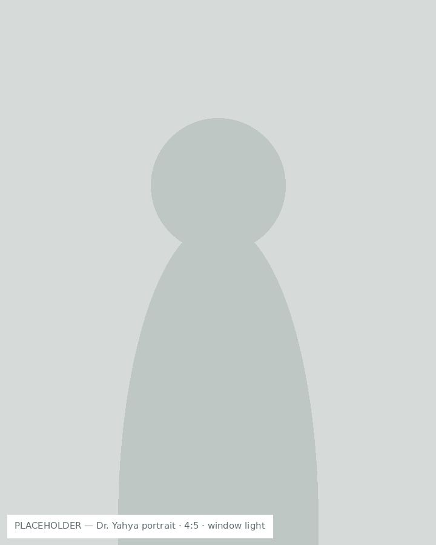
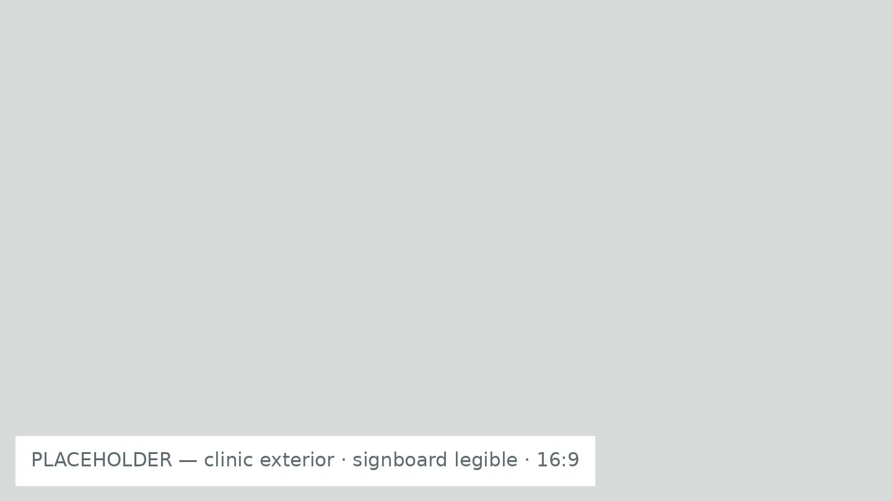

وہاڑی · آنکھوں کا کلینک
آنکھوں کے ماہر ڈاکٹر وہاڑی میں
MBBS, FCPS (Ophthalmology)
PMDC Registration: 00000

کیا آپ کو یہ مسئلہ ہے؟
علامت کے مطابق تلاش کریں
یہ تشخیص نہیں — صرف رہنمائی کے لیے۔ درست تشخیص معائنے کے بعد ہی ہو سکتی ہے۔
یہاں کیوں آئیں
سفید موتیا کا آپریشن وہاڑی میں
آپریشن کے لیے ملتان یا لاہور جانے کی ضرورت نہیں۔ پٹی بندھی آنکھ کے ساتھ لمبا سفر نہیں کرنا پڑتا، اور دوبارہ معائنے کے لیے کلینک چند منٹ کی دوری پر ہے۔
جدید آلات سے مکمل معائنہ
نظر کی جانچ، آنکھ کا اندرونی معائنہ اور پریشر کی پیمائش ایک ہی جگہ ہو جاتی ہے۔
فیس پہلے سے معلوم
معائنے کی فیس اس ویب سائٹ پر لکھی ہوئی ہے۔ آنے سے پہلے آپ کو معلوم ہوتا ہے کہ کتنے پیسے لگیں گے۔
علاج
آنکھوں کا علاج
-
سفید موتیا
نظر پر دھند سی چھا جانا جو آہستہ آہستہ بڑھتی ہے۔ آپریشن سے نظر واپس آ جاتی ہے۔
تفصیل دیکھیں -
نظر کا ٹیسٹ اور عینک
نظر کی جانچ اور عینک کا درست نمبر۔
تفصیل دیکھیں -
کالا موتیا
آنکھ کا پریشر جو خاموشی سے نظر کم کرتا ہے۔ جلد پکڑ میں آ جائے تو روکا جا سکتا ہے۔
تفصیل دیکھیں -
ذیابیطس اور آنکھ
شوگر آنکھ کے پردے کو نقصان پہنچا سکتی ہے۔ سالانہ معائنہ ضروری ہے۔
تفصیل دیکھیں -
خشک آنکھ
آنکھوں میں چبھن، خارش یا جلن۔
تفصیل دیکھیں -
بچوں کی آنکھ
بھینگا پن، سست آنکھ اور بچوں کی کمزور نظر۔
تفصیل دیکھیں -
آنکھ کی ایمرجنسی
چوٹ، کیمیکل، یا اچانک نظر چلی جانا۔
فوری ہدایات -
جنرل کلینک
بخار، درد اور روزمرہ کی بیماریوں کا علاج۔
تفصیل دیکھیں
آپ کا ڈاکٹر
ڈاکٹر محمد یحییٰ
- MBBS, FCPS (Ophthalmology)
- PMDC Registration 00000
- 00 سال کا تجربہ
- 0000 سے زائد آپریشن
- اردو · پنجابی · سرائیکی · انگریزی
«آنکھ کے مریض کو سب سے پہلے یہ جاننا ہوتا ہے کہ اُس کے ساتھ ہو کیا رہا ہے۔ میں معائنے کے بعد مریض اور اُس کے گھر والوں کو سادہ زبان میں بتاتا ہوں کہ مسئلہ کیا ہے، کیا ہو سکتا ہے، اور کتنا خرچ آئے گا۔»
فیس اور اوقات
پہلا معائنہRs. 0000
دوبارہ معائنہRs. 0000
نظر کا ٹیسٹRs. 0000
سفید موتیا کا آپریشنRs. 00000+
آپریشن کا خرچ لینز کی قسم اور آنکھ کی حالت کے مطابق بدل سکتا ہے۔ معائنے کے بعد آپ کو مکمل خرچ بتا دیا جائے گا — اُس سے پہلے کچھ طے نہیں ہوتا۔
کلینک کے اوقات
پیر — جمعرات0:00 — 0:00
جمعہ0:00 — 0:00
ہفتہ0:00 — 0:00
اتواربند
مریضوں کی رائے
مریض کی رائے یہاں شامل کی جائے گی۔
مریض کی رائے یہاں شامل کی جائے گی۔
تمام آراء مریضوں کی تحریری اجازت سے شائع کی گئی ہیں۔

کلینک کہاں ہے
167/1 G بلاک، وہاڑی، پنجاب
مقامی نشانی — ابھی طے ہونا باقی
دوسری نشانی — ابھی طے ہونا باقی
عام سوالات
نہیں۔ آپ کلینک کے اوقات میں بغیر وقت لیے آ سکتے ہیں۔ لیکن پہلے کال کر لیں تو انتظار کم ہوتا ہے۔
پہلے معائنے کی فیس اوپر درج ہے۔ دوبارہ آنے پر کم فیس لی جاتی ہے۔ پوری فہرست فیس والے صفحے پر ہے۔
جی ہاں۔ آپریشن اسی کلینک میں ہوتا ہے۔ ملتان یا لاہور جانے کی ضرورت نہیں، اور دوبارہ معائنہ بھی یہیں ہوتا ہے۔
عام طور پر بیس سے تیس منٹ۔ اگر پُتلی کھولنے کے قطرے ڈالنے پڑیں تو کچھ وقت اور لگ سکتا ہے، اور اُس کے بعد کچھ گھنٹے نظر دھندلی رہ سکتی ہے۔ ایسی صورت میں کسی کو ساتھ لے کر آئیں۔
جی ہاں۔ بچوں کی نظر، بھینگا پن اور سست آنکھ کا معائنہ اور علاج ہوتا ہے۔ جتنی جلدی دکھائیں، نتیجہ اُتنا بہتر۔